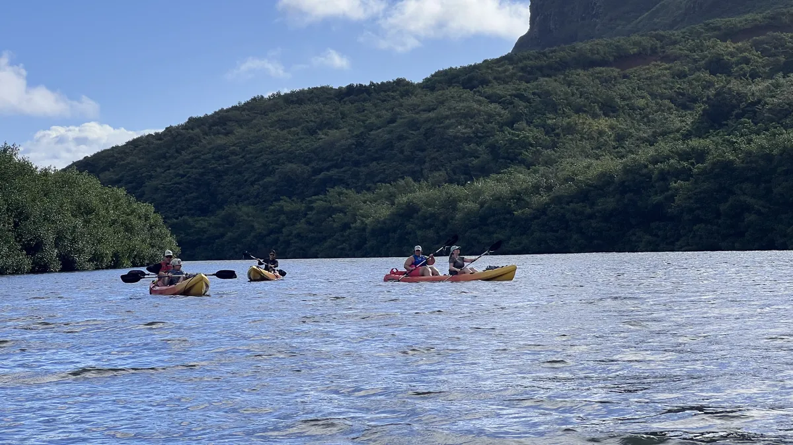

Social media marketing in Hawaiʻi: what actually works for tour operators
Why most tour operators in Hawaiʻi post and hope, what the operators who book from social do differently, and how a retainer should be measured.

Social media marketing works for a tour operator in Hawaiʻi when the content is built around the moment a guest would pay to feel and every post has somewhere to send them. It fails when the account is a diary of whatever happened that day. The difference is not posting more. It is deciding what each post is for.
Why most operators post and hope
Walk through the Instagram accounts of fifty tour companies on any island and you will see the same thing. A guide’s phone shot of a rainbow. A group photo at the end of the trip. A repost from a guest with the location tagged. Four posts a week, a few hundred followers, and no idea whether any of it put anyone on the boat.
None of this is lazy. Operators are running tours from 5 a.m. and the marketing happens in the gap between check-ins. The problem is that the content was never made to do a job. A feed like that can build a following over years, but it does not reliably turn a scroll into a booking, and the owner can feel it.
What the operators who book from social do differently
They treat the feed as a path, not a diary. Every piece of content sits at a stage of the trip in someone’s head, and the operators who book from social make something for each stage. We call the five stages Dream, Plan, Decide, Experience and Advocate, and the system built around them is Reels to Reservations.
- The Dream reel is the one that stops the scroll from a couch in Denver: the first view of the cliffs, the manta in the dark, the splash. It is made for reach and it is made for people who do not know you exist yet.
- The Plan content answers the questions a planner is already asking: how long, how hard, what to bring, where to meet.
- The Decide content is the proof: real guests, real guides, what the day looks like from the moment they arrive.
- The Experience content is for guests who have booked and are on their way. It shows them what to expect so the day lands the way they imagined it.
- The Advocate content turns a guest into the person who tells the next guest.
Once each post has a stage, the account stops being random, and you can see which stage is empty.
The content has to be made, not found
The reason most social media management in Hawaiʻi disappoints is that the manager is working with whatever footage exists. A retainer can only publish what it has. The operators who do well on social invest in production first: a shoot that comes back with a bank of reels cut for each platform, a project film and a photo set. The retainer then has a year of material to plan around, and the guide’s phone becomes a supplement instead of the whole library.
That is why we run production and social media management as two halves of one job. The shoot feeds the engine. The retainer keeps the channels working between shoots.
How a retainer should be measured
If a marketing agency in Hawaiʻi reports followers and likes, ask them to stop. The numbers that matter for an operator are what the content reached, what it sent to the booking path, and what came back. That means tracked links on every post and in every DM, so a click from a reel can be followed to the booking page, and a monthly report that talks about reservations instead of reach.
Nothing is guaranteed, and nobody should claim a result a client has not approved. But the reporting should at least be about the right thing.
Where to start
Start with the moment. Pick the one thing on your tour that guests talk about on the drive home, and make one reel that is only about that. Put a tracked booking link on it. Then look at your feed and ask which of the five stages it is missing. If you want help with any of it, tell us what you run and what you want guests to feel, and we will tell you how we would do it.